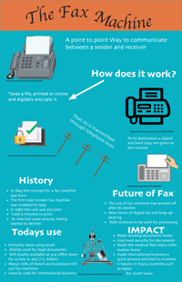

Scott Sauer Portfolio for AENG 110 |
||
| Home Photography Project Print Project Infographic Project Video Project | ||
|  |
For this project, we got to choose a communication device to make an infographic on how it works and some data related to it. I chose the fax machine and did some research on the process that happens when a fax is being sent. Next, I looked for some history about it. Following all the research, I used indesign to get the layout set up and gthen went to find some clipart. I then, threw together a rough outline of what I wanted it to look like and made some revisions to it. We had a contest for who had the best in the class and mine did not get any votes unfortunately. |
|
| Home Photography Project Print Project Infographic Project Video Project | ||
© 2024 Scott Sauer |
||